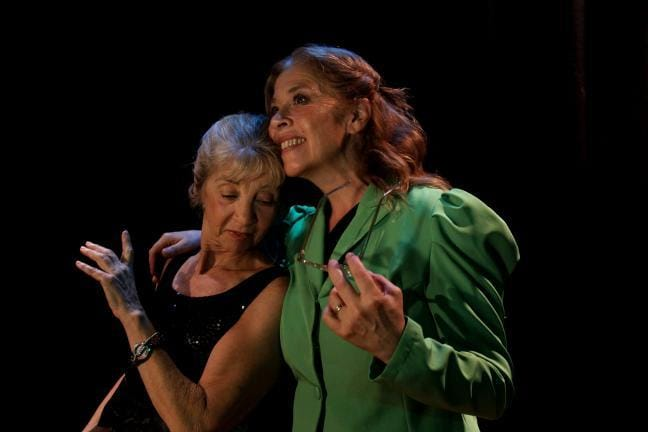
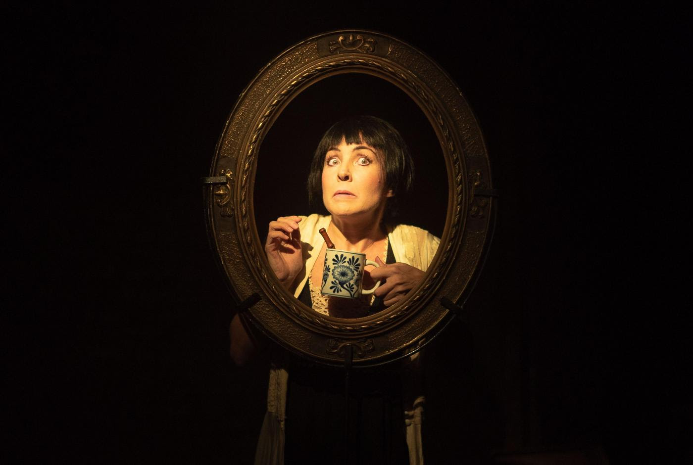

El acompañamiento
Carlos Gorostiza.
La obra aborda la frustración en torno a la postergación de los sueños del alma. El devenir de la obra nos encontrará con el espejo de las propias realizaciones inconclusas.
El mismo texto escrito por Carlos Gorostiza, es narrado a través de la voz femenina y cobra hoy, en pleno Siglo XXI, un vuelco narrativo y hasta simbólico. Actúan Laura Bortnik y Nora Bortnik. La dirección es de Rodrigo Cárdenas.
Para agendar:
Domingos 19.30hs. Teatro BOEDO XXI, Av. Boedo 853, CABA.
Mas información

Fragmentos Mansfield
Milagros Almeida, Sergio Catallani y Miguel Wahren.
Drama poético entre marcos y sillas. Una mujer transita su existencia a través de sus escritos y la deja reflejada en su diario, en sus poesías, sus cuentos, canciones, cartas y relatos. Su particular y apasionante forma de atravesarla, convierte su vida en un drama poético que oscila entre el humor y la soledad, el amor y el dolor. Unipersonal interpretado por Milagros Almeida.
Para agendar:
Los domingos a las 17 hs. en el Espacio Callejón, Humahuaca 3759.
Entrada: $8000.
Mas informacion
La edad de la ciruela
Arístides Vargas.
Este autor siempre dice que su teatro, el del grupo Malayerba, es el teatro de los afectos. Y es por su apego que ahora, por primera vez bajo su dirección, presenta uno de sus textos más representados, "La edad de la ciruela". Con Charo Francés y Liliana Moreno.
Para agendar:
Del 19 de abril al 5 de mayo. Viernes y sábados a las 20. Domingos a las 18
Entrada: $ 7.000. Estudiantes, jubilados y docentes: $ 5.000. CELCIT, sala Juan Carlos Gené, Moreno 431.
Mas información